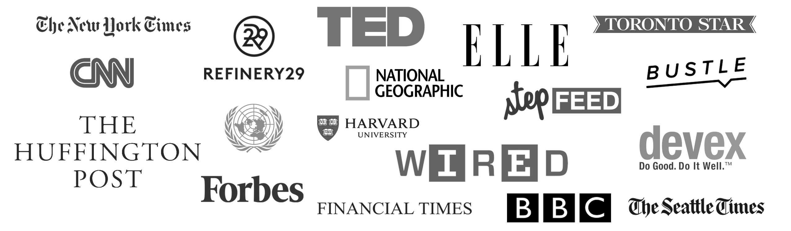

A LITTLE ABOUT ALAA
Champions women's participation in peace processes and conflict mediation..
Alaa Murabit is a medical doctor, Canadian Meritorious Service Cross recipient, one of 17 Global Sustainable Development Goal Advocates appointed by the UN Secretary General, and a UN High-Level Commissioner on Health Employment & Economic Growth.. In 2016 she founded a global Mentorship Programme for emerging leaders and co-founded The Omnis Institute , an independent non-profit organisation committed to challenging critical global issues through the empowerment of emerging local leaders, and became the Executive Director of Phase Minus 1, which provides thought leadership in conflict resolution and inclusive security. Alaa previously founded and spearheaded The Voice of Libyan Women at the age of 21.
An MIT Media Lab Director's Fellow and International Deliver For Good Influencer, Alaa serves as a board member for The Malala Fund, International Alert, Malaria No More and Women’s March Global.
Her efficacy in security, health policy and sustainable development was most recently recognized as one of Canada’s Top 25 Most Influential Women in 2018 by Women of Influence. She also received the 2018 Nelson Mandela International Changemaker Award by The Nelson Mandela Family and PTTOW and the BlogHer 2018 Voice of the Year Award by Sheknows Media.
In 2017 Alaa was named a Forbes 30 Under 30, Aspen Institute Spotlight Scholar, and Bay St. Bull Canada's 30x30. Her leadership in global policy and in elevating the role of women, particularly young, minority women, on global platforms was recognized by Harvard Law who named her the youngest 2017 Woman Inspiring Change.
Leadership

CO-FOUNDER & CEO, The Omnis Institute
In 2016 Alaa founded a global Mentorship Programme for emerging leaders and co-founded The Omnis Institute, an independent non-profit organisation committed to challenging critical global issues through the empowerment of emerging local leaders.
Providing a voice and platform for local leaders, particularly women and youth leaders, Omnis offers leadership acceleration and mentorship opportunities to those with an interest in international peace and security, human rights and sustainable development. Omnis also works closely on the implementation of the UN Sustainable Development Goals (SDGs), illustrating women and youth leaders as fundamental to the achievement of these goals.
Learn more

SUSTAINABLE DEVELOPMENT GOAL GLOBAL ADVOCATE, United Nations
In September 2015 world leaders unanimously adopted the Sustainable Development Goals (SDG). In January 2016 Alaa became the youngest of 17 eminent appointees of the UN Secretary General, alongside Prime Minister Erna Solberg, Richard Curtis, Paul Polman, Jack Ma, Leo Messi, Jeffrey Sachs, Shakira Mebarak, Forest Whitaker, Muhammad Yunus, Leymah Gbowee and others.
With a mandate from the Secretary-General to generate momentum and commitment to achieve the SDGs by 2030, the SDG Advocates work to promote the universal sustainable development agenda, to raise awareness of the integrated nature of the SDGs, and to foster the engagement of new stakeholders in the implementation of these Goals.
Learn more

EXECUTIVE DIRECTOR, PHASE MINUS 1
The Phase Minus 1 team provides thought leadership in peacebuilding, conflict resolution, sustainable development, national security, security cooperation and defense technology.
Thinking outside the box is elusive and never enough. To make extraordinary decisions, leaders need to envision the outcome, balance the use of data and instinct, and consciously accept risk.
Learn more

Board Member, Malala Fund
Founded in 2013, The Malala Fund champions every girl’s right to 12 years of free, safe, quality education. We believe girls are the best investment in the future peace and prosperity of our world. Alaa serves as a board member with the Malala Fund.
Learn more

MEDIA LAB DIRECTOR’S FELLOW, MIT
Alaa was selected as an MIT Media Lab Director’s Fellow in 2016. The Director’s Fellows program is a growing global network that connects the innovation and creativity of the MIT Media Lab with a broad array of leaders to catalyze thought partnership and concrete collaborations. Its goal is to expand the diversity, reach, and impact of the Media Lab and the Director’s Fellows themselves in deploying cutting edge technology, ideas, and innovation to tackle key global challenges. It also helps to shape the perspectives and experience of stakeholders throughout the network, strengthening their capacity to serve and to lead.
Learn more

INTERNATIONAL DELIVER FOR GOOD INFLUENCER, DELIVER FOR GOOD
Deliver for Good, a global campaign that applies a gender lens to global development, announces five campaign influencers: Dr. Alaa Murabit, UN High-Level Commissioner on Health Employment & Economic Growth and UN SDG advocate; José Alberto "Pepe" Mujica Cordano, the former President of Uruguay; Her Royal Highness the Crown Princess Mary of Denmark; Sophie Grégoire Trudeau, a gender equality advocate and the wife of Canadian Prime Minster Justin Trudeau; and Phumzile Mlambo-Ngcuka, the UN Under-Secretary-General and Executive Director of UN Women.
The primary goal of the Deliver for Good campaign is to promote political, programmatic, and financial investments in girls and women across 12 critical issue areas, from education and sexual health and rights to climate change and access to resources. Deliver for Good Influencers will support the campaign by calling for these investments and engaging multi-sector allies to redefine the narrative around girls and women as agents of change and critical drivers of progress toward the Sustainable Development Goals (SDGs) at the global and country levels.
Learn more
Board Member, Women's March Global
Alaa serves as a board member of Women’s March Global, a network of people, chapters and organizations working locally and globally to amplify and activate issues using education, mobilization, dialogue, engagement and collective action in order to advance equality, justice, freedom and inclusion worldwide.
Learn more
BOARD MEMBER, Malaria No More
Every two minutes a child dies of malaria.
Enough is enough.
With your help we can be the generation that ends the oldest and deadliest disease in human history.
Learn more
Board Member, International Alert
Alaa serves as a Trustee for International Alert, a peace building organization operating in over 40 countries globally. International Alert works with people directly affected by conflict to build lasting peace. Together, we believe peace is within our power. We focus on solving the root causes of conflict, bringing together people from across divides. From the grassroots to policy level, we come together to build everyday peace.
Peace is just as much about communities living together, side by side, and resolving their differences without resorting to violence as it is about people signing a treaty or laying down their arms. That is why we believe that we all have a role to play in building a more peaceful future.
Learn more
Founding Member, Harvard's Everywoman Everywhere Initiative
Building on hard-fought, world-changing victories of the international women’s movement, the Everywoman Everywhere Coalition has come together with a singular goal:Mobilization and execution of a global, grassroots-up campaign for a universal legal tool, such as a UN Convention or Additional Protocol, that empowers every woman and girl access to legal remedy should her rights to personal security be violated. The goal of such an instrument is to move violence against women and girls from soft law into a comprehensive, specific, legally binding instrument that establishes global minimal norms and standards to outlaw violence against women, with monitoring, evaluation, and implementation mechanisms, and clear structure for states to track progress.
Learn more

Founder, The Voice of Libyan Women
The Voice of Libyan Women (VLW) is a Non-governmental organization (NGO) founded in order to advance and protect women's rights in Libya. VLW is a youth-led organization which continues to advocate for women's development and to challenge the prevailing norms of Libyan society. VLW works to spread information at a national level by creating local teams made up both of individuals and organizations.
Learn more

Advisor, Connecther
Alaa serves as an advisor to ConnectHer. an organization that provides a platform for non-profits to raise funds for their projects. Non-profit organizations, that are providing services to women and children in their quest for self-reliance, register their organizations then add their projects to Connecther.
Learn more
Alaa in the news
Read Alaa’s latest article in The Boston Globe:
The secret to inclusive societies: Women’s reproductive freedom
Defending reproductive rights nationally and internationally consequently creates a cycle of education, security, and prosperity, be it in resolving food security challenges, countering increasing polarization, or resolving domestic and cross-border conflicts peacefully. Decades of research show that when women are empowered, countries are more secure and more prosperous. None of this happens if a girl’s reproductive rights and educational opportunities remain unprotected.
Read Alaa’s latest article in
Project Syndicate: Ending the War on Education

Around the world, violence disrupts schooling for some 80 million children, as students and their teachers become targets in conflict zones. With the frequency of attacks increasing, the international community must recommit to a global pledge made nearly two decades ago: education for all, everywhere.